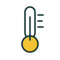
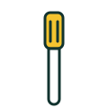

Best for safe, tender meat

Instant-read digital thermometer
Takes the guesswork out of meat, which improves results and food safety. Look for a fast reading and a backlit display.
- Fast reading
- Better results
- Needs a battery
Home / Gadgets
Most kitchen gadgets end up forgotten in a drawer. The ones below solve a real, repeated problem. Before you buy any gadget, ask whether you will use it every week and whether it replaces something you already own.
Affiliate disclosure: some links on this page are affiliate links. If you buy through them we may earn a commission at no extra cost to you. Read more.

If you will not use it every week, skip it. Borrow or improvise instead.
Choose gadgets that replace something you own or do several jobs.
Fewer crevices and dishwasher-safe parts keep gadgets in use.

Takes the guesswork out of meat, which improves results and food safety. Look for a fast reading and a backlit display.
Best single upgradeOne sharp knife does most of the work. Comfort and balance matter more than the brand name.

Heat resistant and gentle on nonstick coatings. Choose one-piece designs so food does not collect in the joint.
Keep leftovers fresh and the pantry organized. Look for stackable shapes and secure lids.
Weighing ingredients gives consistent baking and easy portion control. Look for a tare button and grams and ounces.
| Gadget | Use it for | Replaces | Worth it? |
|---|---|---|---|
| Thermometer | Meat, baking, candy | Guessing | Yes |
| Chef's knife | Daily cutting | A drawer of knives | Yes |
| Silicone spatulas | Stirring, scraping | Metal and plastic tools | Yes |
| Food containers | Storage, meal prep | Mismatched tubs | Yes |
| Kitchen scale | Baking, portions | Measuring cups | If you bake |
Single-purpose tools such as egg-shaped cookers or specialty slicers usually duplicate what a knife or pan already does.